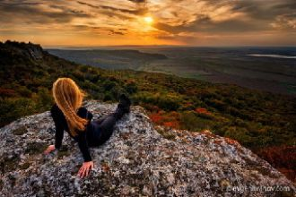
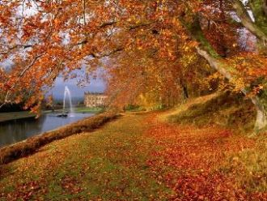
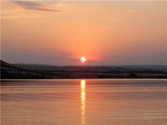
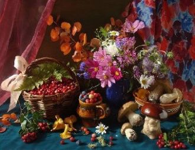
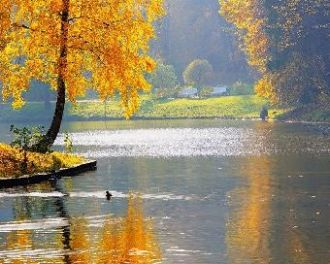

Золотые листикиС дерева летят.Кружит ветер листики.Это — листопад.
Это, это, это — листопад,Это, это, это — листопад.

Группа Гости из будущего исполняла песни в стиле поп в начале 21 века. Текст песни "Осень-осень" - тут.
Ледяной ветер в спину ударит,Ветер разлуки поможет проснуться.Нежный твой голос меня не обманет,Ты не заставишь меня оглянуться.
Нагадала осень солнце на ладошкеГреет мою душу в час по чайной ложке.Подскажи дорогу, расскажи ему,Дай надежду, осень, сердцу, сердцу моему.

Свет твоего окнаДля меня погас,Стало вдpуг темно.И стало всё pавно,Есть он или нет,Тот волшебный цвет...Свет твоего окна -
Осень — удивительное время года.
Уютный дом, тепло ласкает,
Пьяна багряной осени любовью,Лучом скольжений таял стрелок ход,
Ты не внял бы меня, другую,
Застыв в оцепененье, тихо мыслю,

Торопит сентябрь, прохладною лаской,
Теченье, неспешное, волжской воды.
И волны бросают вспенённые краски,
С песка вытирая босые следы.

Мир пленительно интересен
Без тебя осень яркая хмурится,

Залиты ярким светомЛеса и поля.Осень за тёплым летомПришла.
Небо темнее стало.Земля холодна.Осень одежды соткала.Одна.